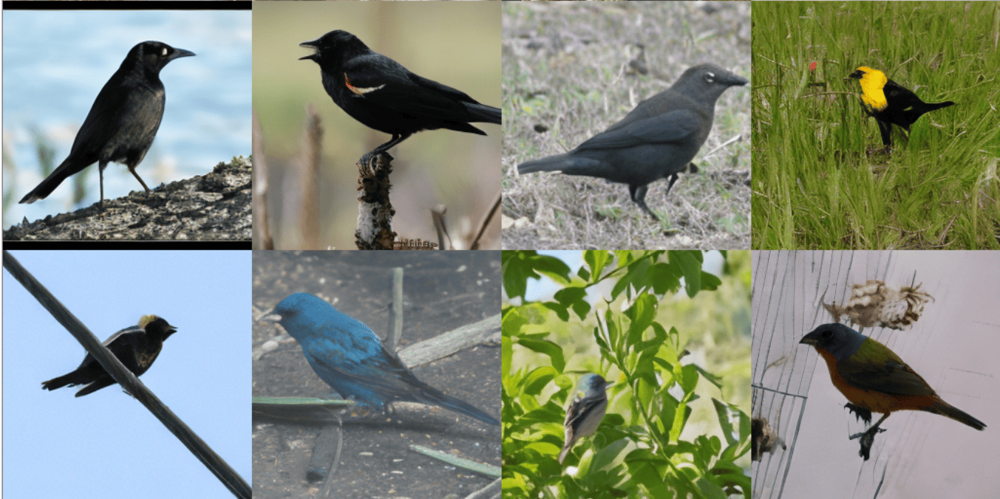
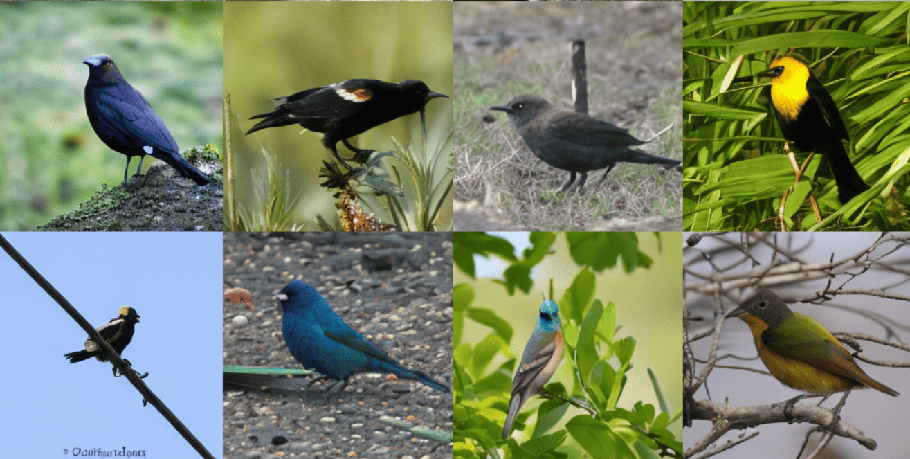
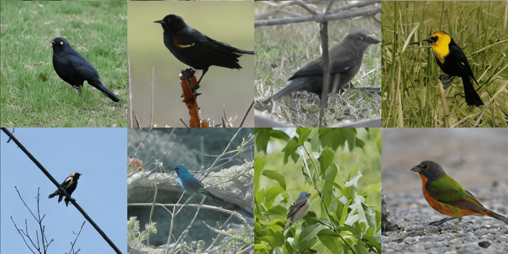
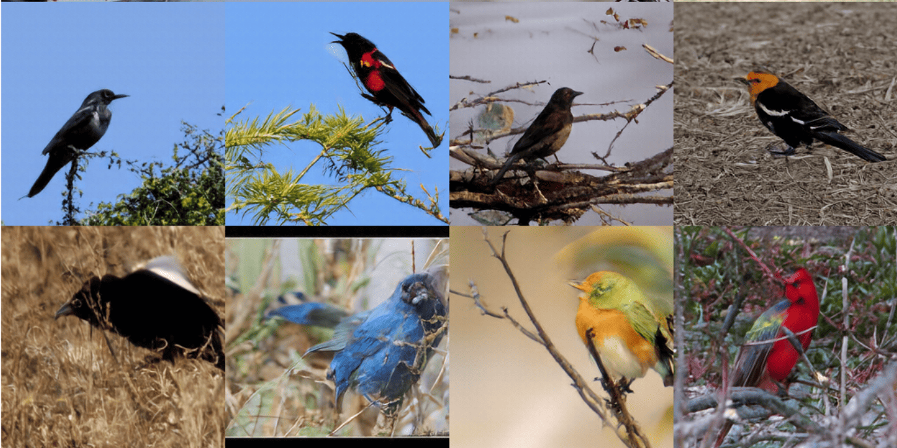
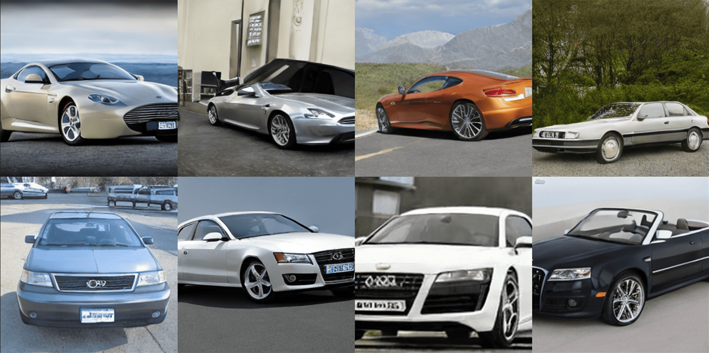
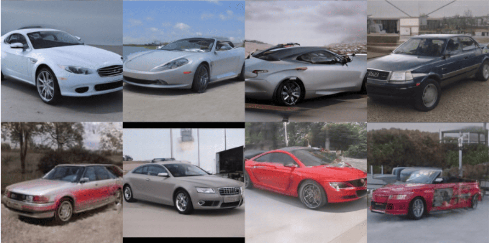
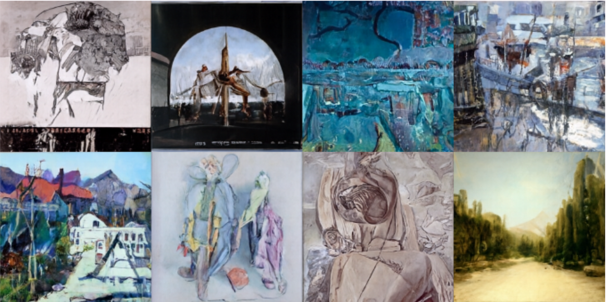
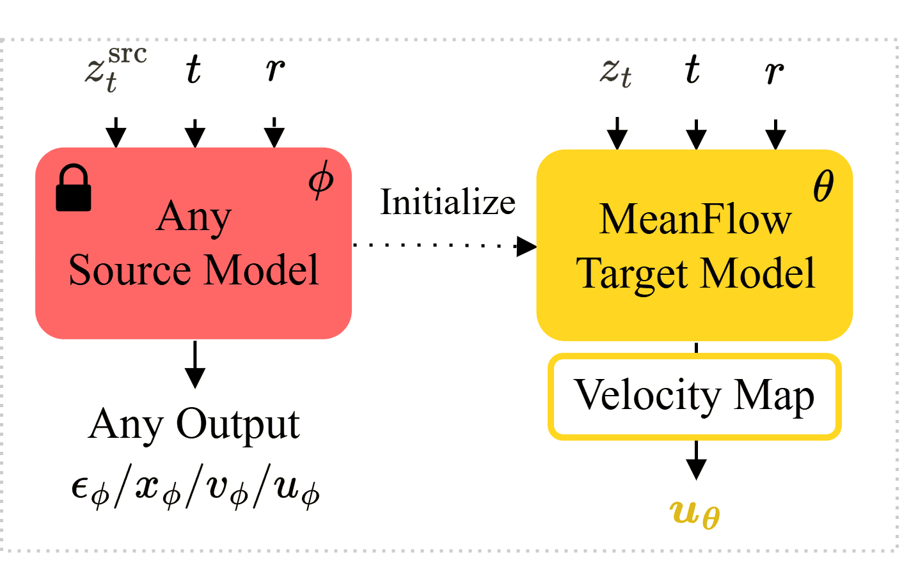
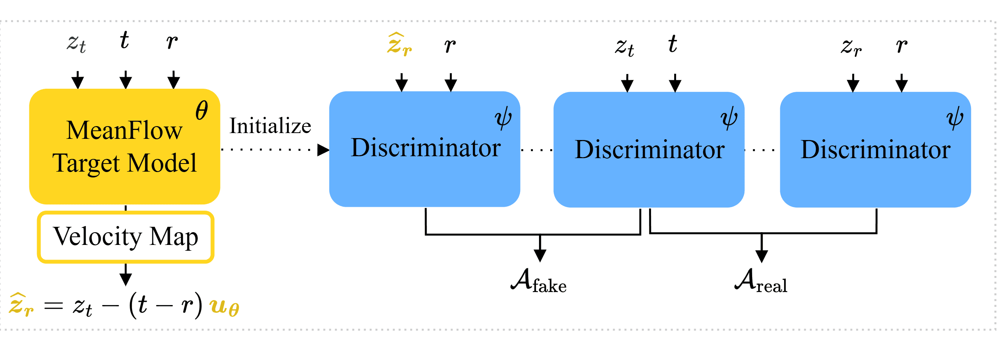

Target-domain generated images using MF-T + CAMF initialized from different source models. Images are uncurated.
Our framework consists of two stages. MeanFlow-Transfer (MF-T) provides a common interface for pretrained diffusion and flow models with heterogeneous source parameterizations. Source models predicting \(x\), \(\epsilon\), \(v\), or \(u\) are mapped into a shared instantaneous-velocity representation, which is used to initialize and adapt a few-step MeanFlow generator \(u_\theta\) to the target domain. Continuous Adversarial MeanFlow (CAMF) then refines the adapted MF model by extending continuous adversarial learning from instantaneous velocities to the finite-interval average velocity predicted by MeanFlow.

MeanFlow-Transfer (MF-T). A pretrained source generator with an arbitrary output parameterization is mapped to a shared velocity representation and adapted into a target-domain MeanFlow (MF) model that predicts the finite-interval average velocity \(u_\theta\).

Continuous Adversarial MeanFlow (CAMF). The MF model transports \(z_t\) to the predicted endpoint \(\hat{z}_r = z_t - (t-r)u_\theta\), and the discriminator compares the average change of the potential \(D_\psi\) along the real and model-predicted target-domain transport segments through \(\mathcal{A}_{\mathrm{real}}\) and \(\mathcal{A}_{\mathrm{fake}}\).
If you find this work useful, please consider citing:
@misc{bahram2026continuousadversarialmeanflowtransfer,
title={Continuous Adversarial MeanFlow Transfer},
author={Yara Bahram and Zahra Dehghani and Mélodie Desbos and Eric Granger and Pablo Piantanida and Mohammadhadi Shateri},
year={2026},
eprint={2608.19540},
archivePrefix={arXiv},
primaryClass={cs.LG},
url={https://arxiv.org/abs/2608.19540},
}